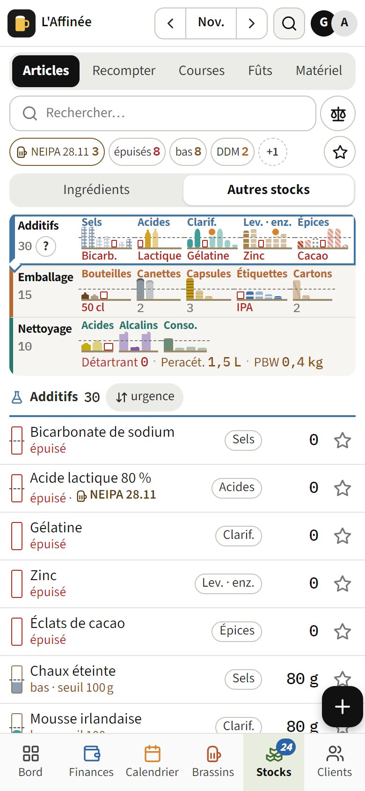
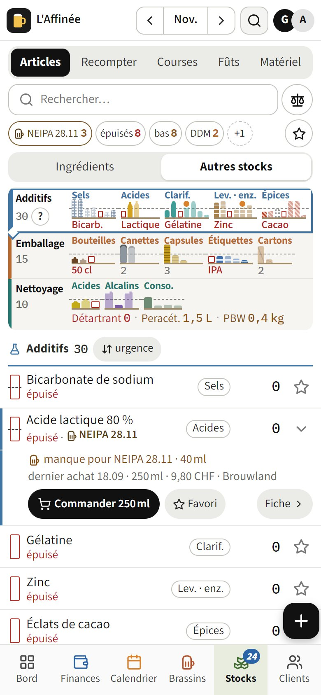
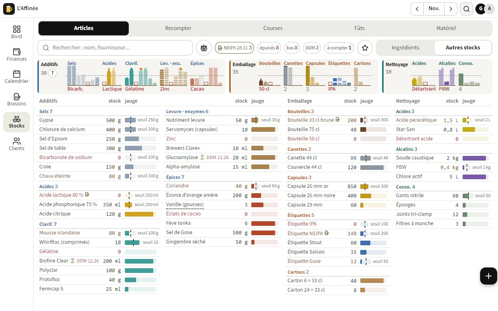
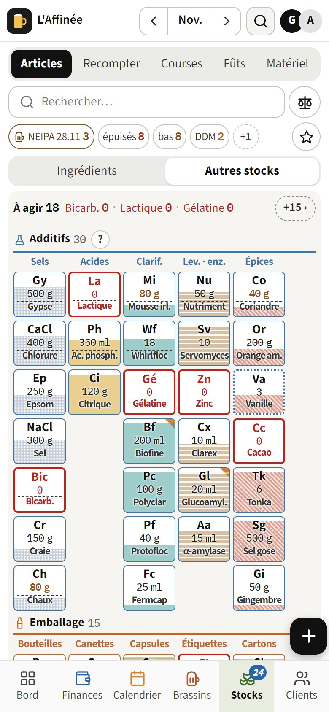
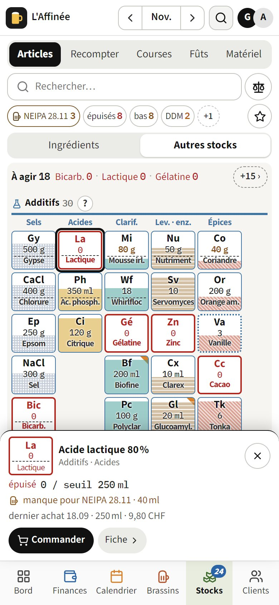
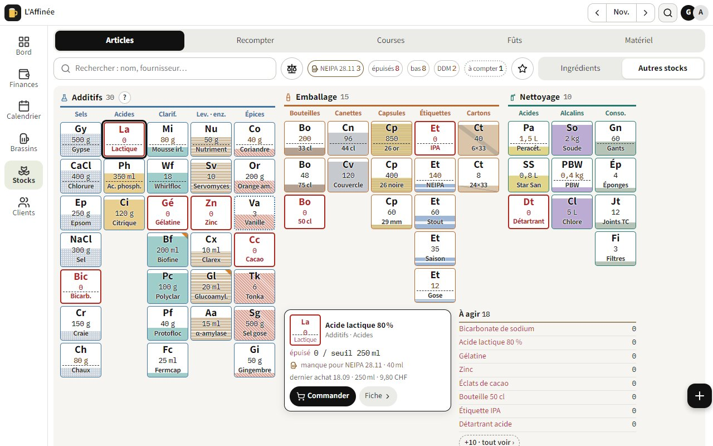
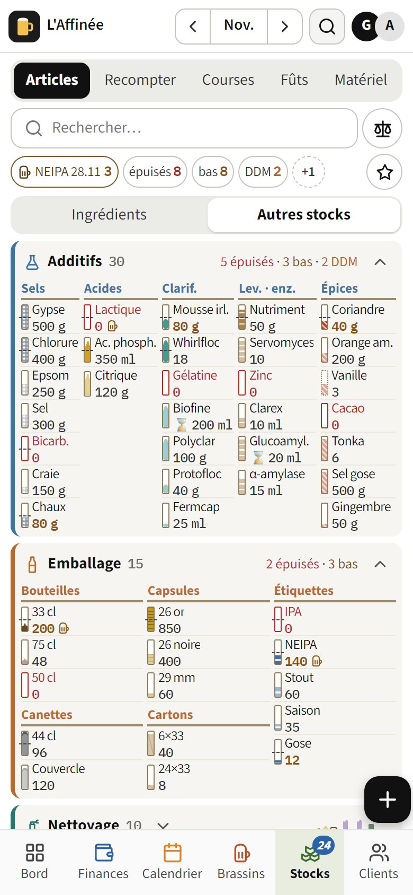
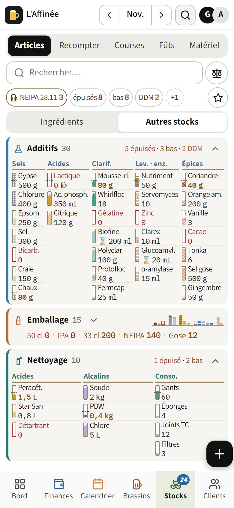
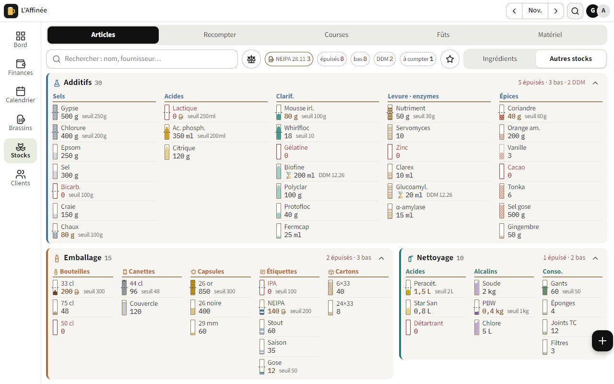

Autres stocks · 3 versions compactes · 22.11
D4 refait après ton refus de d4b. 30 additifs, 15 emballages, 10 produits de nettoyage, en ligne avec Ingrédients. « Je prends » sous la version que tu retiens.
« SI j'ai 30 additif différents ? Non je veux qqch de compact comme le reste »
« Tu peux aussi utiliser, couleur et forme pour les stock autre »
« Pour les ingrédients, on peut avoir aussi plusieurs filtrer dynamique. Pas juste, manque, bas ddm. Pas en mettre trop mais mettre les plus pertinents en premier ( tout sur une seule ligne) »
« La vue type étagère est incroyablement, mais il y a un ou deux souci, et dans autre stock, j'ai pas cette vue.. »
Ta capture, la référence
01 : Stocks › Articles, annotée de ta main.

D4 · Autres stocks
AL'étagère jumelle
Le mur de ton étagère, avec trois rayons : Additifs, Emballage, Nettoyage. Sous chaque famille, l'article le plus urgent.
Toucher une ligne l'ouvre : manque pour la NEIPA du 28.11, dernier achat, Commander. À 1280, trois murs et les tables, seuil écrit.



CLe tableau périodique
Une case par article : symbole, quantité et nom. La case se remplit selon le stock, et le tiret marque le seuil. Toucher une case ouvre sa feuille avec Commander.
« À agir 18 » est en tête ; « +15 » ouvre la liste complète.



BLe casier nommé
Le rayon ouvert montre ses 30 articles avec nom, quantité et jauge, sans défiler. Un rayon replié tient sur une ligne : ses pots en miniature et ce qui manque, en mots. Toucher le chevron ouvre Nettoyage.


